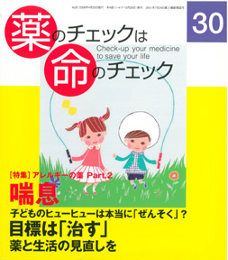

No.30 特集 アレルギーの薬 Part.2 喘息 2008年4月 発行
突然襲ってくる激しい咳き込み。極端に狭くなる気道を懸命に通ろうとして、呼吸はヒューヒューと音をたてる。アレルギー反応による気道の閉塞は、単に苦しいだけでなく、場合によっては死をももたらす。事実、喘息発作で死ぬ人は毎年2000人を超えている。喘息症状を示す人の数は年々増加傾向にあり、子どもだけでなく成人してから発症する人も少なくないという。
恐ろしい病気であるがゆえに、正確な診断と慎重な治療が不可欠だ。だが、その診断・治療は適切に行われているのだろうか。患者の声からは、本当の喘息でない人が喘息と診断されたり、危険な薬を長期間にわたって使われている実態が浮かび上がる。
もくじ
特集 アレルギーの薬 Part.2 喘息
■ 三者三様･･･「喘息」いろいろ−患者に聞く −編集部
■ 「ほどほどに」が大事です−小児喘息専門医 豊島協一郎さんに聞く
発作の程度の見分け方と受診のタイミング
■ 喘息って、いったい何？−浜さんに聞く −編集部
■ 喘息はこうやって治療しよう−浜さんに聞く −編集部
■ 不安と迷いと「医師との関係」−患者グループに聞く −社納葉子
■ 喘息の薬を評価する −浜六郎
■ 患者用 薬の説明書（サルブタモール、ベクロメタゾン、クロモグリク酸）
■ リスト：喘息に使われる薬剤の適応症と評価
■ こういう考え方でいこう！ まとめ −浜六郎
連載
■ 映画の中のクスリ（最終回） 製薬会社 −木元康介
■ みんなのやさしい生命倫理（30） EBMの生命倫理（9） −谷田憲俊
■ リレーエッセイ「患者の命を守る」役割とは −山口美智子
■ EBM超入門 質的研究はなぜ必要か
トピック
■ 混合診療禁止は違法？ 東京地裁判決をめぐる空騒ぎ −二木立
その他
■ コーヒー無礼区
■ 行ってきました EBM研究フォーラム
■ 奈良県大淀町立病院母体死亡事件・裁判傍聴記１
■ 質問箱 １ ステロイドの代わりにメソトレキセートを勧められたSLE患者
２ アストラ社が新高血圧症診療指針の発表を急いだ理由は？
３ 29号の薬剤の分類に混乱しています
４ リウマチへの免疫抑制剤の使用は？
５ NKFの日本語訳は全米腎臓財団では？
■ 読者の声
■ 書評『官僚に告ぐ！』『生物の進化に学ぶ乳幼児期の子育て』『やっぱり危ないタミフル』
■ イベント情報
■ 用語の解説
「小児喘息専門医に聞く」より
「ほどほどに」が大事です
子どもの気管支喘息について、発作の程度の見分け方、受診が必要かどうか、発作の予防と治療などを豊島協一郎さん（大阪市：とよしま小児科医院）に伺いました。豊島さんは、大阪府立呼吸器・アレルギー医療センターでも（1974〜2000年に勤務）、開業後も一貫して小児の喘息治療に携わっておられる、臨床現場を熟知する専門家です。（以下、引用省略）
詳しくは本誌で。